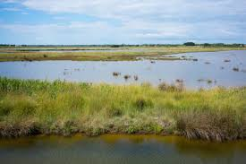

Marais
Le Marais breton (ou Marais breton-vendéen, pour la partie vendéenne, par décision du conseil départemental), est une zone géographique humide de France située sur le littoral de l'océan Atlantique. Il marque la limite entre deux anciennes provinces françaises, la Bretagne et le Poitou, et s'étend sur deux départements, la Loire-Atlantique et, majoritairement, la Vendée, tous deux inclus dans la région administrative des Pays de la Loire. Le Marais breton est protégé par des digues et des dunes (stabilisées par des pins, forêt des Pays-de-Monts) car dans les alentours de Bouin, par exemple, les terres parfois en dessous du niveau de l'océan étaient autrefois soumises à de fréquents raz-de-marée. Un système de vannage empêchant les eaux salées de remonter dans plusieurs zones du marais a autrefois été également mis en place afin de rendre le marais breton compatible avec l'agriculture. Le marais est un lieu d’observation privilégié, un site reconnu pour sa nature préservée et son tourisme écoresponsable. Il s'étend sur 36 000 hectares.